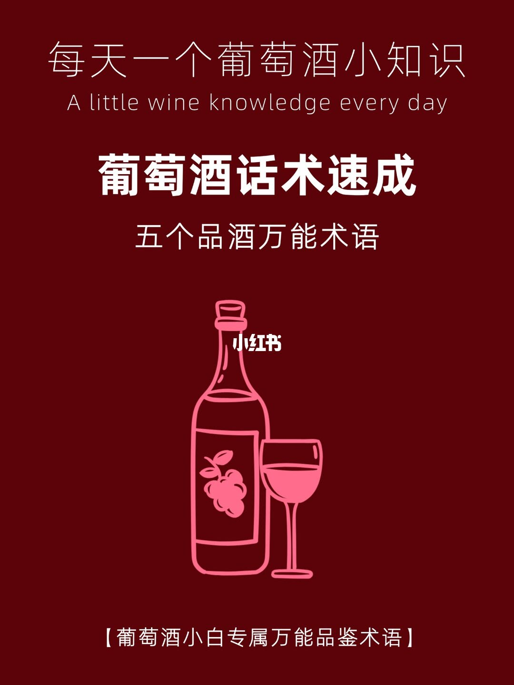
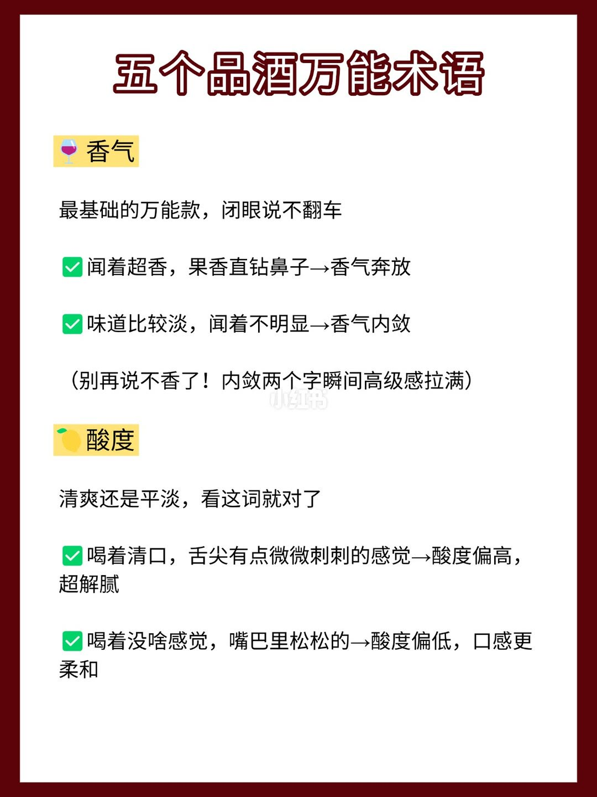
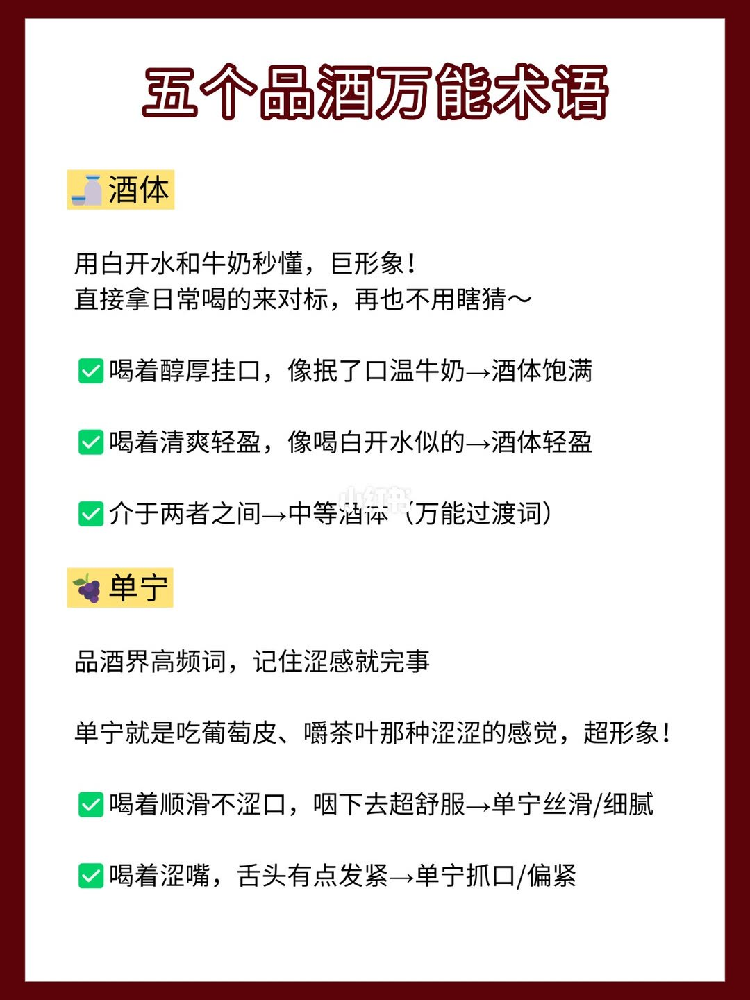
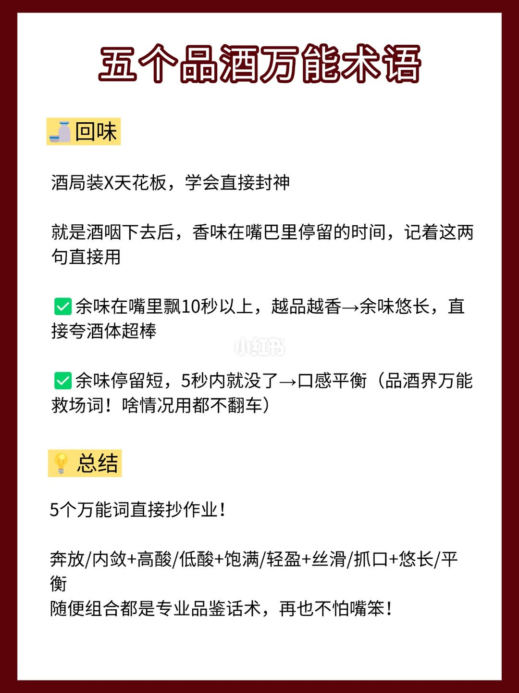

图文实录 · 小红书 · 喵酱陪你慢旅行
五个品酒万能术语
这套词是给新手把感觉换成说法：香气奔放或内敛，酸度高低，酒体像奶还是像水，单宁丝滑或抓口，回味过十秒说悠长、五秒内改口说平衡。
1/4
封面只报题目
酒红底。上行「每天一个葡萄酒小知识」，英文 A little wine knowledge every day。大标题「葡萄酒话术速成」，下面「五个品酒万能术语」。中间是酒瓶和酒杯线稿。底行括号里写「葡萄酒小白专属万能品鉴术语」。这一页没有术语正文。

2/4
香气和酸度
香气：很香、果香冲鼻子，说香气奔放；味道淡、闻不明显，说香气内敛。旁边写别再说「不香」，「内敛」听起来更完整。酸度：喝着清口、舌尖微刺，说酸度偏高、解腻；喝着没感觉、嘴里松，说酸度偏低、口感更柔和。

3/4
酒体和单宁
酒体用日常饮料比：醇厚挂口、像抿温牛奶，是酒体饱满；清爽、像白开水，是酒体轻盈；介于两者之间叫中等酒体，图上把它当成过渡词。单宁围绕涩：顺滑不涩、咽下去舒服，是单宁丝滑或细腻；涩嘴、舌头发紧，是单宁抓口或偏紧。涩感被比成吃葡萄皮或嚼茶叶。

4/4
回味，以及一套拼句
回味是咽下去以后香气还留多久。超过 10 秒而且越来越好，说余味悠长。5 秒内就没了，改说口感平衡，图上称这是万能补救，怎么说都不算错。总结是五组里各挑一个：奔放或内敛，高酸或低酸，饱满或轻盈，丝滑或抓口，悠长或平衡。图上说任意组合都像品鉴用语。

汇总
这是替换说法，不是品鉴标准
五组词分在第 2 到第 4 页：香气、酸度、酒体、单宁、回味。10 秒以上说悠长，5 秒内改说平衡，是图上的口诀。牛奶、白开水、葡萄皮都是比喻。它帮人把「不香」「没感觉」换成一对反义词，不能用来判断酒好不好，也没有品种和产区。